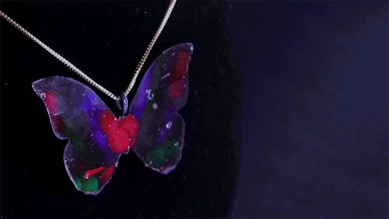
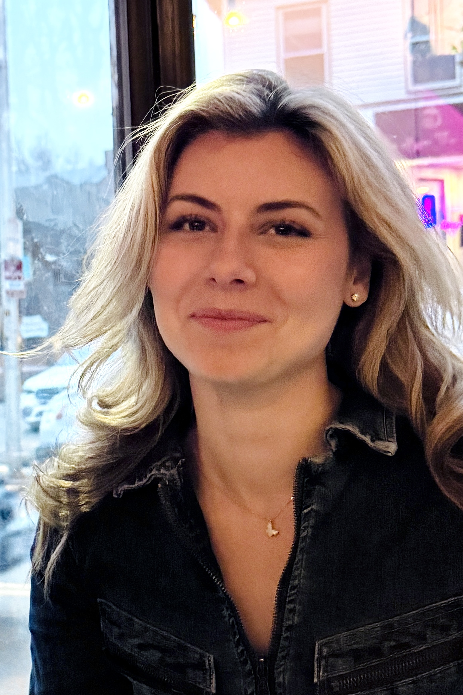
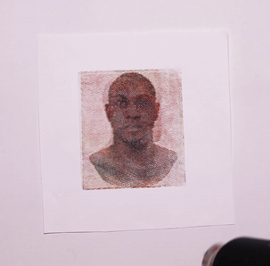

Paris Myers
MIT · EECS & CSAIL
I am a PhD student in MIT’s Department of Electrical Engineering and Computer Science and a researcher at CSAIL, working in the Human-Computer Interaction Engineering group led by Professor Stefanie Mueller. I received my SM from the MIT Media Lab in 2025.
My work explores how light, computation, and materials can shape the appearance of physical objects. I develop tools for creating programmable color and explore the connections between holography and fabrication.
News
- MorphoChrome featured in MIT News: A new way to “paint with light”.
- My work on holographic fabrication and programmable structural color featured in MIT EECS, including RED GREEN BLUE at the MIT Museum.
- Thermochromorph featured in MIT News: Images that transform through heat.
Select Research

Holographic Fabrication of Structural Color on 3D-Printed Surfaces
RED GREEN BLUE · Holographic films integrated with 3D-printed geometries to produce angle-dependent structural color.
MIT EECS featureAdditional publications 2020–2021 · 3 papers
- Women Are Funny: Influence of Apparent Gender and Embodiment in Robot Comedy
Nisha Raghunath, Paris Myers, Christopher A. Sanchez, Naomi T. Fitter · ICSR 2021
- Beyond the Cube: A Curatorial Reflection on the Portrayal of Humanoid Robots
ICRA 2021 workshop “Sentimental Machines”
- Read the Room, Robot! Exploring Audiovisual Methods to Improve the Effectiveness of Robotic Comedians
Carson Gray, Paris Myers, Naomi T. Fitter · IROS 2020 workshop on Social AI for Human-Robot Interaction of Human-Care Service Robots
Education
Massachusetts Institute of Technology
PhD in Electrical Engineering and Computer Science — in progress
SM, MIT Media Lab — 2025
Oregon State University · Honors College
Honors Bachelor of Science (HBS), Bioengineering
Honors Bachelor of Fine Arts (HBFA), Fine Art